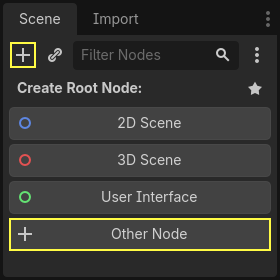
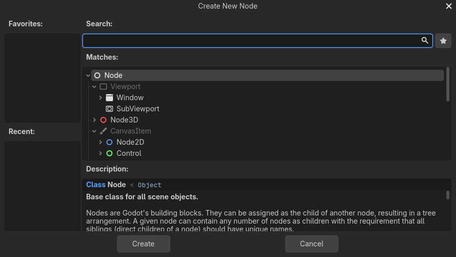
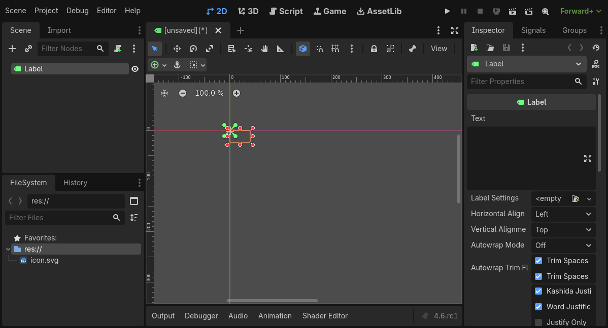
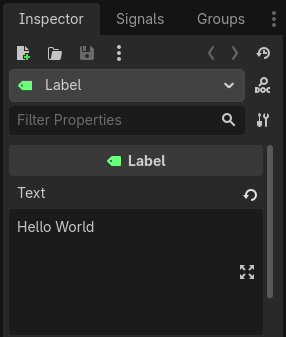
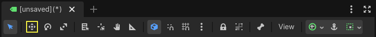
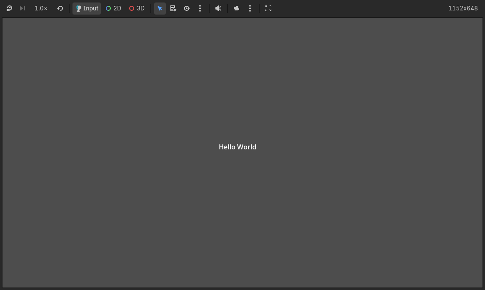
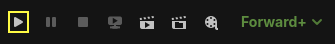
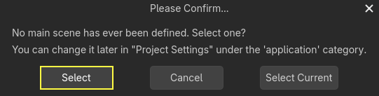

Node và Scene
Trong Tổng quan các khái niệm chính của Godot, chúng ta đã thấy một game Godot là một cây các scene và mỗi scene là một cây các node. Trong bài học này, chúng tôi sẽ giải thích thêm một chút về chúng. Bạn cũng sẽ tạo scene đầu tiên của mình.
Node
Node là những khối xây dựng cơ bản của game. Chúng giống như nguyên liệu trong một công thức nấu ăn. Có hàng chục loại node có thể hiển thị hình ảnh, phát âm thanh, đại diện cho camera, và nhiều thứ khác.

Tất cả node đều có các đặc điểm sau:
Một cái tên.
Các thuộc tính có thể chỉnh sửa.
Chúng nhận callback để cập nhật mỗi frame.
Bạn có thể mở rộng chúng với thuộc tính và hàm mới.
Bạn có thể thêm chúng vào một node khác làm node con.
Đặc điểm cuối cùng rất quan trọng. Các node cùng nhau tạo thành một cây, đây là một tính năng mạnh mẽ để tổ chức dự án. Vì mỗi node có chức năng khác nhau, việc kết hợp chúng tạo ra hành vi phức tạp hơn. Như đã thấy trước đó, bạn có thể xây dựng một nhân vật điều khiển được, có camera đi theo, bằng một node CharacterBody2D, một node Sprite2D, một node Camera2D và một node CollisionShape2D.

Scene
Khi bạn tổ chức các node thành cây, như nhân vật của chúng ta, ta gọi cấu trúc này là một scene. Sau khi lưu, scene hoạt động như các loại node mới trong trình chỉnh sửa, nơi bạn có thể thêm chúng làm con của một node hiện có. Khi đó, instance của scene xuất hiện như một node duy nhất với phần bên trong được ẩn đi.
Scene cho phép bạn tổ chức code của game theo bất kỳ cách nào bạn muốn. Bạn có thể kết hợp các node để tạo ra các loại node tùy chỉnh và phức tạp, như một nhân vật game biết chạy và nhảy, một thanh máu, một chiếc rương có thể tương tác, và nhiều thứ khác.

Về bản chất, trình chỉnh sửa Godot là một trình chỉnh sửa scene. Nó có rất nhiều công cụ để chỉnh sửa scene 2D, 3D cũng như giao diện người dùng. Một dự án Godot có thể chứa bao nhiêu scene tùy theo nhu cầu của bạn. Engine chỉ yêu cầu một scene làm scene chính của ứng dụng. Đây là scene mà Godot sẽ tải đầu tiên khi bạn hoặc người chơi chạy game.
Ngoài việc hoạt động như node, scene còn có các đặc điểm sau:
Chúng luôn có một node gốc, như "Player" trong ví dụ của chúng ta.
Bạn có thể lưu chúng vào ổ đĩa cục bộ và tải lại sau.
Bạn có thể tạo bao nhiêu instance của một scene tùy thích. Bạn có thể có năm hay mười nhân vật trong game, được tạo ra từ scene Character của mình.
Tạo scene đầu tiên
Hãy tạo scene đầu tiên với một node duy nhất. Để làm vậy, trước tiên bạn cần tạo một dự án mới. Sau khi mở dự án, bạn sẽ thấy một trình chỉnh sửa trống.

Trong một scene trống, dock Scene ở bên trái hiển thị một số tùy chọn để thêm nhanh node gốc. thêm một node Node2D, thêm một node Node3D, và thêm một node Control. Các thiết lập sẵn này chỉ để tiện lợi; chúng không bắt buộc. cho phép bạn chọn bất kỳ node nào làm node gốc. Trong một scene trống, tương đương với việc nhấn nút ở góc trên bên trái của dock Scene, nút thường dùng để thêm một node mới làm node con của node đang được chọn.
Chúng ta sẽ thêm một node Label duy nhất vào scene. Chức năng của nó là vẽ văn bản lên màn hình.
Nhấn nút hoặc để tạo node gốc.

Hộp thoại Create New Node mở ra, hiển thị danh sách dài các node có sẵn.

Chọn node Label. Bạn có thể gõ tên của nó để lọc danh sách.

Nhấp vào node Label để chọn nó và nhấp nút ở dưới cùng cửa sổ.

Có nhiều thứ xảy ra khi bạn thêm node đầu tiên của scene. Scene chuyển sang không gian làm việc 2D vì Label là một loại node 2D. Label xuất hiện, đang được chọn, ở góc trên bên trái của viewport. Node xuất hiện trong dock Scene bên trái, và các thuộc tính của node xuất hiện trong dock Inspector bên phải.
Thay đổi thuộc tính của node
Bước tiếp theo là thay đổi thuộc tính Text của Label. Hãy đổi nó thành "Hello World".
Đi đến dock Inspector ở bên phải viewport. Nhấp vào ô bên dưới thuộc tính Text và gõ "Hello World".

Bạn sẽ thấy văn bản được vẽ trong viewport khi bạn gõ.
Xem thêm
Bạn có thể chỉnh sửa bất kỳ thuộc tính nào được liệt kê trong Inspector như chúng ta đã làm với Text. Để xem tài liệu tham khảo đầy đủ về dock Inspector, hãy xem Inspector Dock.
Bạn có thể di chuyển node Label trong viewport bằng cách chọn công cụ di chuyển trên thanh công cụ.

Khi Label đang được chọn, nhấp và kéo ở bất kỳ đâu trong viewport để di chuyển nó vào giữa khung nhìn được giới hạn bởi hình chữ nhật.

Chạy scene
Mọi thứ đã sẵn sàng để chạy scene! Nhấn nút ở góc trên bên phải màn hình hoặc nhấn F6 (Cmd + R trên macOS).

Một cửa sổ bật lên yêu cầu bạn lưu scene, việc này là bắt buộc để chạy nó. Nhấp nút trong trình duyệt tệp để lưu nó với tên label.tscn.

Ghi chú
Hộp thoại Save Scene As, cũng như các hộp thoại tệp khác trong trình chỉnh sửa, chỉ cho phép bạn lưu tệp bên trong dự án. Đường dẫn res:// ở phía trên cửa sổ đại diện cho thư mục gốc của dự án và là viết tắt của "resource path" (đường dẫn resource). Để biết thêm thông tin về đường dẫn tệp trong Godot, hãy xem Hệ thống tệp.
Ứng dụng sẽ mở trong một cửa sổ mới và hiển thị dòng chữ "Hello World".

Đóng cửa sổ hoặc nhấn F8 (Cmd + . trên macOS) để thoát scene đang chạy.
Xem thêm
Xem Nhúng game để biết thêm thông tin về cửa sổ Game xuất hiện khi chạy dự án.
Đặt scene chính
Để chạy scene thử nghiệm, chúng ta đã dùng nút . Một nút khác bên cạnh, , cho phép bạn thiết lập và chạy scene chính của dự án. Bạn cũng có thể nhấn F5 (Cmd + B trên macOS) để làm việc này.

Ghi chú
Chạy scene chính của dự án khác với chạy scene hiện tại. Nếu gặp hành vi không mong muốn, hãy kiểm tra để đảm bảo bạn đang chạy đúng scene.
Một cửa sổ bật lên và mời bạn chọn scene chính.

Nhấp nút , và trong hộp thoại tệp xuất hiện, nhấp đúp vào label.tscn.

Bản demo sẽ chạy lại. Từ giờ trở đi, mỗi khi bạn chạy dự án, Godot sẽ dùng scene này làm điểm bắt đầu.
Ghi chú
Trình chỉnh sửa lưu đường dẫn của scene chính trong tệp project.godot ở thư mục dự án của bạn. Dù bạn có thể chỉnh sửa trực tiếp tệp văn bản này để thay đổi cài đặt dự án, bạn cũng có thể dùng cửa sổ để làm việc đó. Để biết thêm thông tin, hãy xem Cài đặt dự án.
Trong phần tiếp theo, chúng ta sẽ thảo luận về một khái niệm quan trọng khác trong game và trong Godot: tạo instance của một scene.